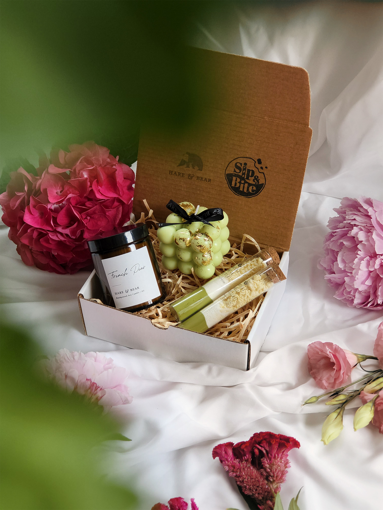
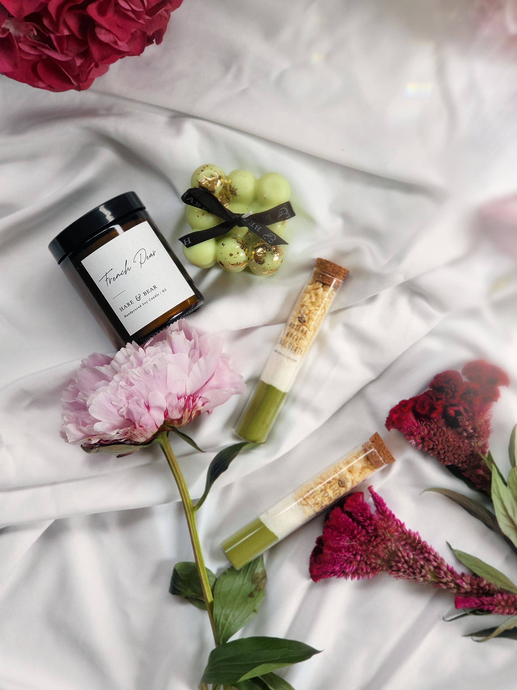
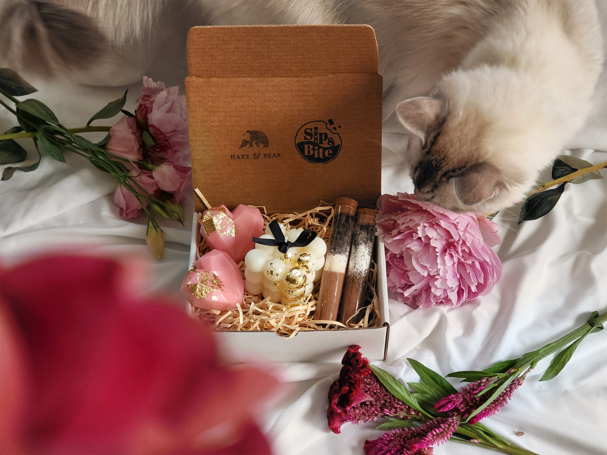
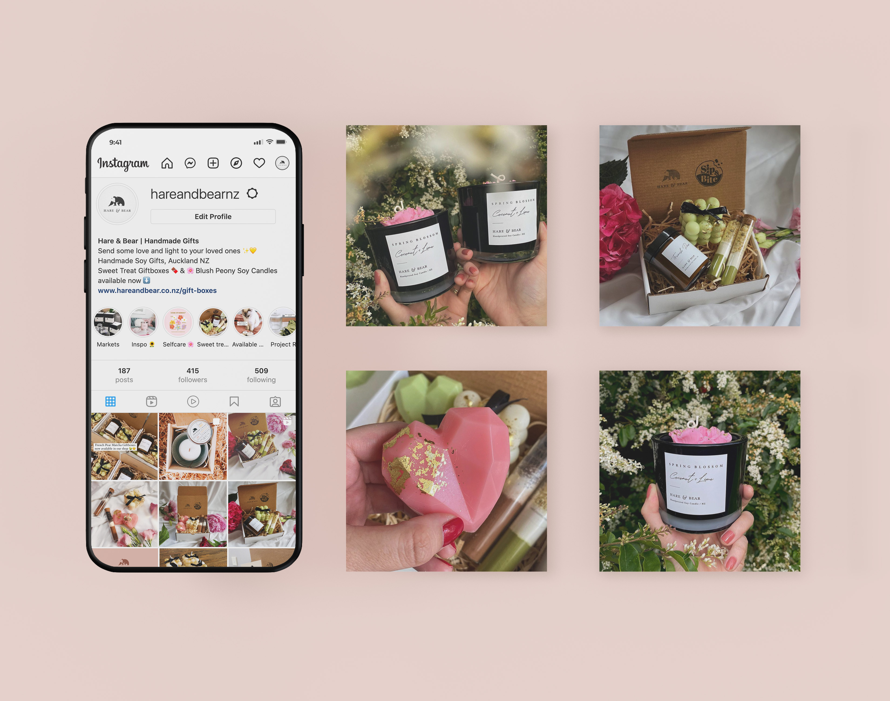
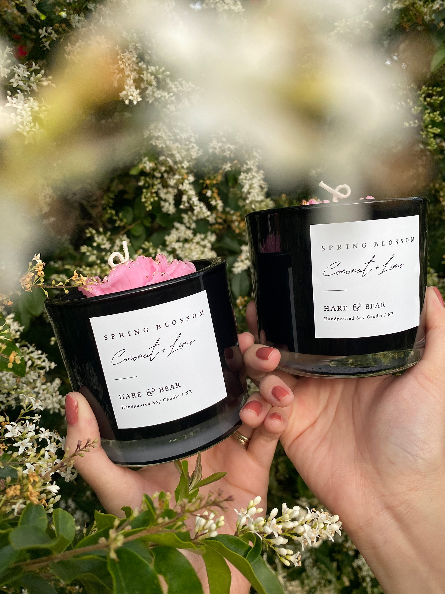
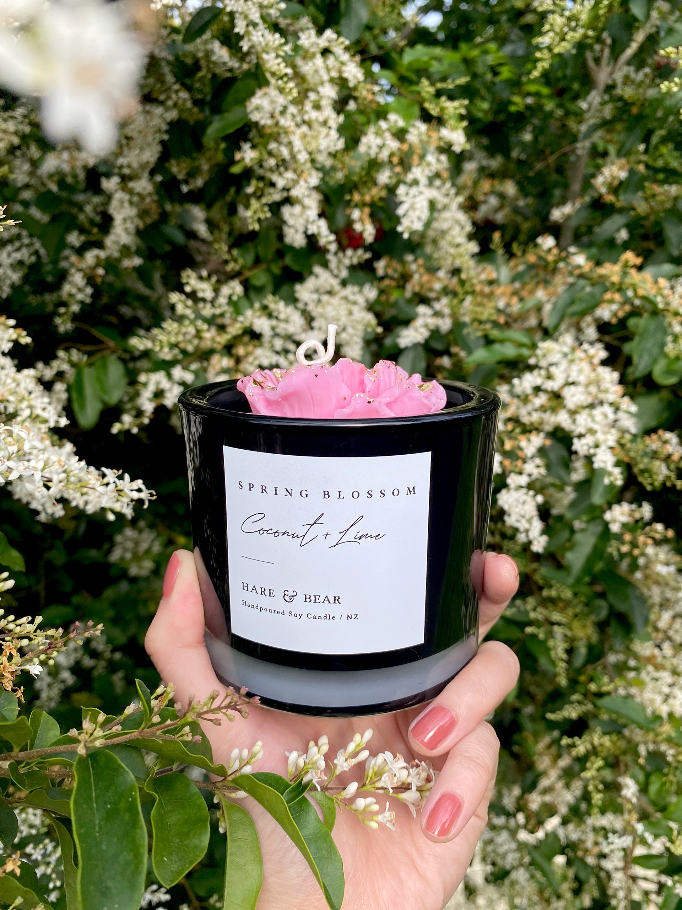

Website design project
Hare & Bear Website, Photography & Socials
Summary
Hare & Bear is a candle and gifting brand I built from the ground up, spanning website design, photography, social content, and the wider customer experience.
My role covers both the creative direction and the day-to-day brand delivery, from digital marketing and product presentation through to content creation and e-commerce upkeep.
Hare & Bear was a passion project I started together with my husband Robert. We absolutely love making hand-poured candles and know how special it is to receive a handmade gift from someone.
We know how busy life can be and how hard it can be to find the time to make a thoughtful gift, so we crafted our soy candle gift boxes for exactly those occasions.
As a small business owner, I’ve had the opportunity to wear many different hats, from marketing to production to managing finances. My role includes managing the social media accounts, digital adverts, updating the website, candle production and shipping, accounting, and customer service.
We strive to make sure our customers are well looked after at every step.






For over a decade, I’ve been turning ideas into experiences and digital things people actually want to engage with. I work across branding, digital design, marketing, UI/UX, and AI-assisted vibe coding and design workflow. I’m happiest where storytelling, design, and technology overlap as that’s usually where the good stuff happens.